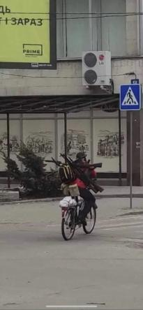

Texting with Kyiv
Date
23/2
[20:23] Kyiv: i think the war has begun
[20:30] Me: have you decided what you’re going to do
[20:30] Me: are you staying in ukraine or leaving
[21:05] Kyiv: the borders are going to be closed
[21:05] Kyiv: probably gonna go to the western ukraine if shit really hits the fan
[21:05] Kyiv: just hoping for a diplomatic resolution
[21:05] Kyiv: but i think putin will get some more land first
[21:39] Me: i feel like
[21:39] Me: this just a play
[21:39] Me: so ukraine will have to give them the land held by separatists
[21:39] Me: but if it gets worse
[21:39] Me: you’re pretty fucked
[21:39] Kyiv: yes
[21:40] Me: if it’s actual open war you can’t join because you can’t betray the ones who need you
[21:40] Me: but you also can’t not join
[21:40] Me: because that’s absolute betrayal of everyone
[21:41] Kyiv: that’s not betrayal. why should anyone be forced to fight the wars that a few rarts started. they may go ahead resolve the issue with a duel. that would be top tier entertainment
[21:42] Me: it’s only a betrayal of the people you know who actually joined
[21:42] Kyiv: i don’t even know anyone crazy enough to join
[21:43] Kyiv: everyone i know says they’re either gonna get the fuck out of here or stay home and watch netflix
[21:44] Me: damn
[21:44] Me: at least you have netflix
[21:44] Me: just come here
[21:44] Kyiv: cant
[21:44] Kyiv: no visa
[21:44] Kyiv: no monies
[21:45] Kyiv: u come here
[21:45] Me: cant
[21:45] Me: resigned kur
[21:46] Kyiv: accepting kur
[22:03] Me: sad times
[23:17] Me: i bet moldova is pretty good if you give it a chance
[23:17] Kyiv: üëç
[23:17] Me: what are you doing rn
[23:17] Kyiv: busy
[23:17] Me: nice but what are you doing
[23:18] Kyiv: cant talk right now dude
[23:18] Kyiv: we’re fucked
24/2
[00:18] Kyiv: ok so the airports are getting destroyed. the men who are stopped at the borders are drafted by force. the tanks are already moving in from three different directions.
[00:19] Kyiv: guess im staying
[00:29] Me: bruh
[00:29] Me: if you fucking
[00:29] Me: die from this
[00:29] Me: i will make the world remember you
[00:30] Kyiv: i wish to be the most useless character in a zoltan story
[00:31] Me: i’ll name the king who dies from falling in the toilet after you
[17:40] Me: is kyiv going to fall at this rate
[17:40] Me: if you’re planning on going elsewhere, might as well be earlier as opposed to later
[18:23] Kyiv: i dont know
[18:24] Kyiv: but i cant leave country at this point
[23:43] Me: this is the worst possible situation
25/2
[08:54] Kyiv: the resistance continues…

[08:54] Kyiv: honestly, i didn’t expect the ukrainian army to do so well
[08:55] Kyiv: really thought russia could blitzkrieg through the entire country in one day
[08:55] Kyiv: with barely any casualties
[11:00] Me: Which regions are the ones with Ukrainian separatists
[11:00] Me: It’s only the two, right
[11:00] Kyiv: far right
[11:00] Kyiv: donetsk and lugansk
[11:25] Me: i guess beyond those it’s like
[11:25] Me: at least an actual fight
26/2
[00:04] Me: bruh what the fuck
[00:04] Me: are you still in kyiv
[00:04] Kyiv: yes
[00:04] Me: still at your apartment?
[00:05] Kyiv: no. im with my parents at our country place. it’s not super far away from all the action but it’s safer than my apartment
[00:06] Me: if you intend to leave ukraine
[00:06] Me: i can probably start helping you with a canadian visa
[00:07] Me: i know it aint happening
[00:07] Me: but like
[00:07] Me: if you join the fight
[00:07] Me: i’ll fucking go there and join too i dont know what’s going on anymore
[00:08] Kyiv: thanks
[00:08] Kyiv: i’ll join the fight only as the last resort
[00:08] Kyiv: but im pretty sure im not going anywhere at this point
[00:08] Kyiv: can’t let these fucking russians have what they want
[00:09] Me: last resort
[00:10] Kyiv: honestly, dying seems like a better option
[00:10] Kyiv: wouldn’t want to be russian under any circumstance
[00:10] Kyiv: might be last chance to die ukrainian
[00:12] Kyiv: surprisingly, the ukrainian defences are doing a really good job
[00:15] Me: this is
[00:15] Me: a situation ukraine already got fucked in
[00:15] Me: but what do you think
[00:15] Me: are the chances ukraine remains a country once violence is over
[00:16] Kyiv: i really hope so
[00:16] Kyiv: and i think there’s still hope
[00:16] Kyiv: we will definitely lose some land
[00:17] Kyiv: but as long as we have kiev
[00:17] Kyiv: and the president that i thought was a joke turned out to be a competent leader during these fucked up times
[00:17] Me: i was watching zelenskyy videos
[00:17] Me: no clue what he’s saying
[00:17] Me: but the fact he’s still in kyiv is pretty good
[00:18] Me: man
[00:18] Kyiv: yeah
[00:18] Me: it’s so fucky
[00:18] Me: reading my other discord channels
[00:18] Me: people talking about unbalance in the new total war
[00:18] Me: like it’s the biggest problem
[00:18] Me: when people i know are in warzones
[00:18] Me: kind of surreal
[00:18] Kyiv: yeah. i know
[00:18] Kyiv: my mom said this morning
[00:19] Kyiv: that only now she understands how good everything really was before
[00:20] Kyiv: and our cat shitting in the bathtub being our biggest problem kinda feels unreal now
[00:21] Kyiv: man
[00:22] Kyiv: nobody thought putin was insane enough to start a full scale invasion
[00:22] Kyiv: everyone thought he was bluffing
[00:23] Me: does russia even have allies in this
[00:35] Kyiv: belarus
[00:36] Kyiv: and putin was hoping for kazakhstan to send their forces but they refused
[00:36] Me: isn’t belarus just
[00:37] Me: letting putin go through their territory
[00:37] Me: or are they supporting them in any material way as well
[00:37] Kyiv: we don’t know
[00:38] Kyiv: but the fact that the entire northern border is with belarus grants access to kiev and western regions
[00:38] Kyiv: all shit we have near kiev right now
[00:38] Kyiv: came from belarus
[00:39] Me: do you think they could have stopped russia
[00:39] Me: or would they have just gone through anyway
[00:39] Kyiv: they had no intention to stop anyone. lukashenko is putin’s fuck buddy
[00:41] Me: that makes sense
[00:41] Me: i’m still thinking about
[00:41] Me: which steps could have been preventable
[00:41] Me: but i guess it doesn’t matter to anymore
[00:42] Kyiv: it couldn’t be prevented. a year ago one russian politician slipped that on march of next year we’ll take kiev in 3 days
[00:43] Kyiv: so whatever the fuck is happening right now
[00:43] Kyiv: was planned a long time ago
[00:45] Me: can’t believe russia is sacrificing its relationship with every country to invade ukraine
[00:48] Kyiv: i’ve been trying to understand why he’s doing this but i still don’t understand how all these costs and losses could possibly justify themselves.
[00:49] Kyiv: russia’s economy is going to collapse
[00:49] Kyiv: most diplomatic and financial relationships with russia will be cut
[00:50] Kyiv: all this for a plot of land full of people who will keep fighting even if the war is already lost
[00:51] Kyiv: even the british minister is saying that everything that’s happening is illogical and putin has probably gone insane
[00:52] Me: is this just some
[00:52] Me: bullshit power trip
[00:52] Me: where he’s just too upset ukraine is not russia
[00:53] Me: i really wonder what the public in russia thinks
[00:53] Me: can’t imagine anyone thinking this is helpful to them
[00:55] Kyiv: old retards who actually voted for putin still support him. they believe the russian news even when it’s complete bullshit. a lot of people appear to be brainwashed
[00:56] Kyiv: young people are out in the streets, protesting against the war
[00:56] Kyiv: almost 2000 were already arrested
[00:57] Kyiv: i don’t know what putin was hoping for but he might have dug up his own grave.
[07:09] Kyiv: https://www.youtube.com/watch?v=gRc9htfOLiw
[07:09] Kyiv: damn
[11:33] Me: man this is just like the winter war
[11:33] Me: fuck them up bruh
[12:02] Me: man
[12:02] Me: being like
[12:02] Me: do you want to play stardew valley
[12:02] Me: feels like a really long time ago
[12:02] Me: but it was actually less than a month wasn’t it
[12:38] Kyiv: fucking putin
[12:38] Kyiv: penis head
[13:11] Me: this is making me wonder about myself
[13:11] Me: if ____ gets invaded, how hard would i work
[13:11] Me: or if ____ gets invaded, how hard would i work
[13:11] Me: i think in the end
[13:11] Me: all i can do is align with people who look like me
[13:15] Kyiv: in the end, it’s about how you feel toward your nation. some people have no problem leaving their homeland without looking back even for a split second, others can’t leave knowing their home is being invaded. both have justifiable reasons
[13:15] Kyiv: i can see myself being both
[13:15] Kyiv: but this time i choose to stay
[13:16] Kyiv: artillery strike in 10min
[13:16] Kyiv: ttyl
[14:01] Me: good luck
27/2
[00:58] Me: someone suggested a blog with just the shit you’ve been saying from kyiv
[00:58] Me: do you mind if i go ahead with it
[00:59] Kyiv: go ahead. i dont mind
[01:00] Me: already i’ll see if it goes anywhere
[01:00] Me: talk to people about mediums tomorrow
[01:00] Me: man i dont know
[01:01] Me: feels like it’s in poor taste since everything is still currently fucked
[01:01] Me: but it might be good to get perspective out there
[01:01] Me: since all the news is created by people who aren’t even there
[01:01] Kyiv: i scan the local news, bbc, cnn, nyt, and the russian news
[01:02] Kyiv: russians are just living in a parallel universe
[01:02] Kyiv: they say they dont have any casualties
[01:02] Kyiv: and they are successfully liberating ukrainians from the nazi rule
[01:03] Kyiv: in the meantime more than 20k civilians took arms to defend against russians
[01:03] Kyiv: already a lot of footage of people mass producing molotovs
[01:03] Kyiv: to defend against btrs
[01:03] Me: what are btrs
[01:04] Me: man you know
[01:04] Me: i was talking with ____
[01:04] Me: and she mentioned how some people on chinese social media are not taking it seriously
[01:04] Me: and i was thinking
[01:04] Me: getting invaded by an overwhelming force
[01:05] Me: all the civilians taking up arms and making homemade explosives to put up a futile fight
[01:05] Me: is just like the resistance against the japanese
[01:05] Me: but everyone still feels disconnected
[01:06] Me: to people forget about history too quickly or do people just not care about anythng happening directly to them
[01:06] Kyiv: either
[01:09] Kyiv: just got an update in the civilan force
[01:09] Kyiv: 37k in kiev alone
[01:11] Me: how is it recorded
[01:11] Me: do people register or is it an estimate
[01:11] Kyiv: everyone has to register
[01:12] Me: how does the civilian registeration work
[01:12] Kyiv:
[01:12] Me: do you need to register to get weapons
[01:12] Kyiv: ppl making molotovs
[01:12] Kyiv: yeah, you can’t just grab one
[01:13] Kyiv: i like this guy
[01:13] Kyiv:

[01:13] Me: oh yeah i saw that one
[01:14] Me: do ukrainians generally have weapons at home
[01:14] Me: like can you just go outside with whatever you have and just shoot them
[01:14] Me: because 37k seems like a low number
[01:14] Me: for the civilian resistance
[01:14] Me: you got 3 million people in the city and only 37k want to fight?
[01:14] Kyiv: thats just the ones who officially registered
[01:14] Kyiv: and it’s only in kiev
[01:15] Kyiv: it’s only the third day. i think the number will keep growing
[01:15] Me: did you register
[01:15] Kyiv: not yet
[01:16] Kyiv: i told my mom that i should register
[01:16] Kyiv: and she said she’d die if something happened to me
[01:16] Kyiv: gg
[01:16] Kyiv: i hate these ultimatums
[01:17] Me: yea i know what you mean
[01:17] Me: same shit happens in my family all the time
[01:17] Me: i’m like i’m going to the grocery storea
[01:17] Me: and my mom says she’ll kill herself if i go out during covid
[01:17] Me: and i’m like
[01:17] Me: oh
[01:17] Me: slightly different situations though
[01:19] Kyiv: damn
[01:19] Kyiv:
[01:24] Me: i remember that one time i got hit by a tank on my way to school when i was 10
[01:27] Me: are you guys armed with anything
[01:28] Kyiv: my mom has 9mm pistol with rubber bullets
[01:28] Kyiv: that’s about it tho
[01:28] Kyiv: there’s a baseball bat
[01:28] Kyiv: and an axe
[01:29] Kyiv: just come here
[01:29] Me: fuck that’s not a lot
[01:29] Kyiv: let’s make molotovs
[01:29] Kyiv: and watch avatar
[01:29] Me: ay lmao
[01:29] Me: i’m pretty sure i’m not allowed to go there anymore
[01:29] Kyiv: yeah probably not
[01:30] Me: all the borders inwards were already closed right
[01:30] Me: man i knew i should have gone to ukraine last year
[01:30] Me: if i went i could have died by now
[01:30] Kyiv: u missed ur chance
[01:30] Me: you know
[01:31] Me: from the police report of the vancouver riots
[01:31] Me: they made it with just petrols and rubbing alcohol
[01:31] Me: extra ghetto
[01:31] Kyiv: isn’t it just
[01:31] Kyiv: fuel and motor oil
[01:32] Me: official recipes include tar as well
[01:32] Kyiv: i don’t even know where to get tar
[01:32] Me: exactly
[01:32] Kyiv: gg
[01:32] Kyiv: i mean
[01:32] Kyiv: tar is optional
[01:32] Kyiv: for extra spice
[01:33] Me: just fill bottles with petrol alcohol and styrofoam and go protest your favourite hockey team losing
[01:33] Me: extra canadian
[01:33] Me: if it can burn down a cosmetics store it can probably kill russians
[01:33] Kyiv: can’t imagine caring about a sport team losing
[01:34] Me: honestly since what’s happening
[01:34] Me: it’s hard to imagine caring about anything
[01:34] Me: like i got a fracture snowboarding yesterday
[01:34] Me: then i came home
[01:34] Me: was like
[01:34] Me: aw man this sucks
[01:34] Me: and saw kyiv got blitzed while I was on the slopes
[01:34] Me: and i thought
[01:34] Me: actually i have it pretty good
[01:35] Kyiv: should probably see a doctor
[01:36] Kyiv:
272v2.mp4
[01:36] Kyiv: i like this liberation
[01:37] Me: ukrainian airspace completely closed
[01:38] Kyiv: well ye
[01:38] Me: fuck i really think i should have gone to ukraine last year
[01:38] Me: like
[01:38] Me: i can’t imagine you fighting and potentially dying
[01:38] Me: and me not there you know
[01:38] Me: always thought it would be like
[01:38] Me: i dunno
[01:38] Kyiv: that’s ok
[01:38] Me: us throwing boomarings at the fire nation or something
[01:38] Kyiv: we’ll smoke shisha at my summer house next year
[01:40] Me: man
[01:40] Me: we could have both been sokka
[01:40] Kyiv:
[01:41] Kyiv: doesn’t sound too bad
[01:41] Me: season 1 sokka where he was 0% useful instead of season >2 sokka where he was 1% useful
[01:42] Me: my first girlfriend turned into the moon
[01:43] Kyiv: that’s rough buddy
[01:47] Me: man
[01:47] Me: i have a fracture and hemorrhoids, can’t believe how injured i am even though i did nothing
[01:47] Me: i’m going to bed talk tomorrow
[01:48] Kyiv: cya
[01:55] Kyiv:
272v3.mp4
[01:55] Kyiv: anti tank at work
[06:48] Kyiv: in war all skills are useful
[06:49] Kyiv: just read on the news that gypsies stole a russian tank
[10:43] Me: i wish i was a gypsie
[12:20] Me:
272v4.mp4
[21:26] Me: any updates on how things are going?
28/2
[00:27] Kyiv: eu is giving a lot of weapons
[00:28] Kyiv: belarus is being a bitch
[00:28] Kyiv: might join russians
[00:29] Me: makes sense
[00:32] Kyiv: can’t wait for putin to get assassinated
[00:34] Me: oh man
[00:34] Me: usually putin does the assassinating
[00:34] Me: plot twist
[00:34] Me: i heard a foreign legion is getting put together
[00:34] Me: any word on how that’s going?
[00:35] Kyiv: just woke up like 20 minutes ago. 100 notifications from news apps
[00:35] Me: oh
[00:35] Kyiv: haven’t heard anything about the foreign legion
[00:36] Kyiv: i know there are doctors coming from israel
[00:36] Kyiv:
[00:37] Me: remember that old video
[00:37] Me: from that game show
[00:37] Me: where the guy asks which country has the most doctors
[00:37] Me: so he says
[00:37] Me: the country with the most jews
[00:39] Kyiv: fuck
[00:39] Kyiv: that makes sense
[00:54] Me: gottem
2/3
[00:36] Kyiv:
[00:36] Kyiv: looters
[00:36] Kyiv: yer money or yer life
[00:37] Me: the fuck happened to them
[00:37] Kyiv: they got caught looting
[00:38] Kyiv: they’re lucky to be alive cuz there was an order to shoot looters on sight
[00:38] Me: are they just
[00:39] Me: ukrianians who started looting because things were going to shit
[00:39] Kyiv: ye
[00:39] Me: you best not be a manhunter
[00:39] Kyiv: traitors
[00:39] Me: i like how they both have socks
[00:40] Me: bruh did you take that picture
[00:40] Me: reverse google search no results
[00:41] Kyiv: people also tie looters to lampposts with stretch foil and call the police
[00:41] Kyiv: reminds me of spoderman movies
[00:41] Kyiv: when he just shot looters with his jizz and called the police
[00:44] Me: fuck
[00:44] Me: spoderman why you shot web
[00:44] Me: man that’s old
[00:47] Kyiv:
[00:47] Kyiv: spoderman
[00:47] Kyiv: spoderman
[00:47] Me: fuck this is just like spoderman
[00:47] Me: man
[00:48] Me: remember playing
[00:48] Me: spoderman fortnite
[00:48] Me: good times
[00:48] Kyiv: ye
[00:48] Kyiv: the only good thing about that game
[00:49] Me: this is so sad despacito kill myself
[00:50] Me: how do police even have time to deal with looters
[00:51] Kyiv: i dont even know. there are a lot of volunteers that patrol the streets. they are the ones that catch the looters. the police arrest them whenever they have time i guess.
[00:51] Kyiv: so they could be tied to the lampposts for hours
[00:52] Me: classic manhunters
[00:52] Kyiv: what r u doing r n
[00:52] Me: makes sense it’s a shit time to be looting
[00:52] Me: applying to jobs
[00:52] Me: i got rejected to 8 more since we last spoke
[00:52] Kyiv: gg
Kyiv started a call that lasted an hour.
2-3 voice
(unrecorded conversation)
Kyiv: I think they were just expecting to be greeted with flowers like they were in donesk and luhansk, but when they went deeper, old people in villages were throwing themselves under tanks to stop them.
Our defence minister said, they will keep being greeted with flowers but they will be on their graves.
Me: I guess for Ukraine, nationalism and patriotism is only really high right now because it’s just gotten attacked. But the fact that so many civilians are willing to just die for the cause right now. I feel like most places in the world, among the general populace at least, they just don’t have that
Kyiv: I guess there’s just an ongoing struggle for freedom and identity that kind of instils this patriotism and nationalism in people. Like constant wars and oppression from Russian side, 20th century was basically hell. It was like you were persecuted just for being Ukrainian. So that kind of instils that strong identity when you’re among Russians. When you live in Soviet Union, and you’re Ukrainian and they hear you speak Ukrainian, then you’re instantly a fucking low life retard, so you have to speak Russian so that people don’t think you’re retarded.
Me: That makes sense
Kyiv: of that kind of, you know. There’s perpetual anger growing inside of you, toward Russians, and a kind of longing to be Ukrainian and to finally have a country and nation that’s united and strong enough to fend off all the–I guess–avenge all the things that happened.
Me: I guess if you put it like that, it’s like the experience I’ve been discussing with my ____ recently. There’s just a lot of similarities with the resistance against the Japanese he was there for, you know? It’s not really necessarily liking a country or idea to a certain degree, but you eventually get tired of being slaves. And everyone who just doesn’t want to be slaves and have barely anything else in common just unite.
Kyiv: I guess that makes sense.
Me: What a time to fucking be alive bro. Didn’t think I’d fucking see this shit. Well, you know what? I guess I did think I would see this day eventually. Just not so soon, you know?
Kyiv: Man, everyone thought Putin was bluffing. Except for Americans, they were like ‘bruh they’re gonna invade at any time now.’ But Ukrainians were like ‘nah, bro are you joking?’
Me: bro look at this though. I still have a cat at least
Kyiv: piece of shit.
Me: Aw man
So, it’s been a few days What do you think the chances of Ukraine still being in country by the time this shit’s over
Kyiv: Chances are pretty high, the question is how much damage will we endure? Because Russians have been bombing major cities, destroying old infrastructure, hospitals, kindergartens, schools, just regular buildings where people live. There’s already a lot of damage done and it’s not over yet
Me: that makes sense
Kyiv: and how much of it how much land we’ll be able to retain by the end
Me: Kind of weird that, militarily, in terms of like actual military forces not just like, Bro you want like five bullets? Isn’t it kinda funny that there are countries sending military to help Russia but no one’s helping Ukraine even though the entire world’s like ‘aw man, pray for Ukraine’
Kyiv: What do you mean military, do you mean Belarus
Me: Is it just Belarus?
Kyiv: Well, I mean, there are Chechens but Chechens are part of Russia. I mean, Ukraine is now opening for volunteers from several countries the chechen that fled the country during the war kind of want to go back to Ukraine and fight the chechen that won the war because the Chechen that won the war are all retarded. There are Belarusians in Ukraine that disagree with Lukashenko and they, too, want to join the war. The Foreign Legion, dutch volunteers, well I mean there’s several. It’s not a lot but it’s still something
Me: I guess it helps morale at least
Kyiv: Yeah, well the weapons are good and apparently Russians cannot fucking fight. Like I don’t know what the fuck their strategy is but they’ve already lost a shit ton. A convoy’s just been deployed here and it all immediately got destroyed by fucking Turkish planes and whatever gets close to the cities, or is already in the cities, gets destroyed by a fucking military or paramilitary stingers and javelins.
Me: Fuck I was expecting just babushkas and molotovs bruh
Kyiv: Well that happens, too. In villages, people make molotovs and they destroyed btr’s
Me: Frugal living
Yeah I remember when we talked when this first started? You were like, fuck, I guess we will disappear in five minutes. And then somehow Ukraine is doing well. Well, I guess you can’t really do well in this situation but it’s not as bad as expected
Kyiv: Ukrainian military is doing surprisingly well. That’s pretty good. And a lot of people are coming back from other countries, my dad’s friend from childhood who lives in Canada is already on the way to the Ukraine to fight the war.
Me: fuck I wish I was on the way
Man, I was super ready to join the Foreign Legion I was like fuck if I’m gonna die I might as well be fighting the Russians bro there’s no better way to die (private)
Kyiv: just like in Call of Duty
Me: exactly
Kyiv: I was always asking myself like why do they always make Russians the enemy until now
Me: Do you remember that one satire video about a Call of Duty pro player who joined ISIS and then got quickscoped that’s a classic
Then they asked his friends what do you think happened and they said, fuck, maybe he got fucking spawncamped by some asshole. You got to spawn camp the Russians dude, just go to Moscow now.
Kyiv: Holy shit bro, just kill Putin.
Putin is just sitting in some bunker. Nobody knows where he is.
Me: I guess we saw that coming. Man, is Zelenskyy still in Kyiv. That’s pretty impressive, didn’t the last two presidents both flee to Russia or something?
Kyiv: Well, in 2014, the president, the prime minister and some other fucking politicians fled to Russia and they’re still in Russia. I think I saw them on the news just a few days ago. They’re all like, Well, yeah, there is a Nazi rule in Ukraine, so you got to liberate the country. And I was like, Oh man, there was Poroshenko he was a president for like four or five years.
Me: I mean,
Kyiv: Part of the reason why this defense was so successful was due to Poroshenko. He had many faults, like his way of dealing with the oligarchs was just kind of sus. But he kind of reinvented the training military, because everything before that were just non existant. There was zero budget, and in the military, we had no soldiers and nothing. When the war in Donbass started, he started investing a lot of money in military so at least when Russia invaded we had some soldiers and military bases and defences
Me: You think you’re going to fight?
Kyiv: Well, people who volunteer to fight say that there’s like fucking three guns for 10 people because they’re just too many volunteers and not enough weaponry. So if I were to join now, I wouldn’t have a weapon, I will just be following the others while catching looters and tying them to lightpoles.
Me: yeah so instead of joining a kingdom, you can just be the roaming war party just fighting looters. That’s just the early game, you know, then you can go to tournaments.
Kyiv: Can I quicksave?
Me: This is like one of those times when you start the game and say don’t let me quit without saving then you get stuck in a wall and lose all your progress.
Kyiv: Worse than dying bruh
Me: I guess catching looters is pretty important, other people need that shit
Kyiv: We do construction so we got an order from the Ukrainian military to construct hedgehogs.
Me: Don’t you guys only have four people working for you?
Kyiv: Around four people in the office but here’s like 20 people at the factory
Me: That’s good because I remember last time I was talking to you about it and you were driving like, ‘yeah, I need to go to the factory because someone else was supposed to go but he disappeared’
Kyiv: I don’t know, everything’s fucking gone dude
Me: Was it like the guy who got kidnapped and chained to the radiator
What are you guys building
Kyiv: hedgehogs
Me: what are those
Kyiv: Have you seen clips from war movies, like on the beach at d-day, the fucking giant metal spikes?
Me: Oh, those are called hedgehogs, I didn’t even know that
Kyiv: Yeah, just to stop tanks
Me: I wrote about them in this story, I called them barricades because I googled spiky shit and it didn’t come up with anything
Kyiv: come on bro
Me: fuck
Kyiv: It’s so hard to do anything useful. If I go there there’s nothing for me to do since no weapons, if I stay here, there’s nothing for me to do since I’m just watching them build. So fucking useless
Me: Make molotovs at home
Kyiv: No ingredients. At home I have a pistol with rubber bullets, most I can do is probably shoot myself in the head
Me: You probably won’t even die, just hurts
Kyiv: you can actually die
Me: well it depends like the gun right
Kyiv: it’s a 9 mil pistol
Me: guess it depends more on the bullet
Kyiv: there’s still gunpowder in it, just the metal part is replaced with rubber
Me: severe brain damage
Kyiv: if you get shot in the eye or the temple or maybe even the liver, you might die
Me: Remember that meme about stalker with the guy holding pistol like shotgun and it just says you won’t miss because fear of shooting hand
I remember this video of a guy playing vr Counter Strike. And he was dual wielding AKs. But if you hold it in one hand, if you shoot one bullet, the recoil would just knock it out your hand. So he tried to rush the door with the AKs and he only shot two bullets and both guns bounced off and then he died.
Kyiv: Remember we played paintball and _____ was there just going fucking terminator mode and would hold two guns and he would just walk like this with two guns and shoot at the tent where people are hiding. But like while he was walking there, he got shot like 20 times but he wouldn’t stop
Me: I know, I was one of the people who shot him
good times
(private conversation)
(call ends)
[01:47] Me:
[01:48] Kyiv:

[01:48] Kyiv: sanic
[01:48] Me: fucking
[01:48] Me: hedgehogs
[01:48] Me: didn’t know they were called that until you start building them
4/3
14:25] Kyiv: man
[14:26] Kyiv: so far ukraine is able to defend the flanks
[14:27] Kyiv: and if the west is able to keep up its promises with weapons supply and russia doesn’t get any support we might have a chance
[14:27] Me: holy shit
[14:27] Kyiv: things can go sideways any time
[14:27] Me: china’s state banks all pulled out of russia
[14:28] Me: i dont think a few extra hobos from belarus is going to make a difference
[14:28] Kyiv: they might make an impact since they are walking distance from kyiv
[14:28] Kyiv: and if we lose kyiv
[14:28] Kyiv: it’s gg
[14:29] Kyiv: but i think lukashenko pussied out of it
[14:29] Kyiv: and balarusians don’t wanna fight ukrainians
[14:29] Me: does russia even need to worry about
[14:29] Me: supply lines or whatever
[14:29] Me: aren’t they all based in eastern ukraine now
[14:29] Me: and going to kyiv from there
[14:30] Kyiv: it’s still a long way from the eastern front. i think they banked on the troops in the north to take kyiv in no time
[14:30] Kyiv: but that didn’t go according to plan
[14:30] Kyiv: so far
[14:30] Kyiv: there is still a threat from north
[14:30] Kyiv: and they are taking a lot of land from the south as well
[14:31] Me: fuck
[14:31] Me: can’t wait for sabaton to write a song about this
[14:31] Kyiv: listened to the new sabaton new album yesterday
[14:31] Kyiv: idk bro
[14:31] Kyiv: didn’t really like it
[14:32] Kyiv: i think if there was no great war album i’d actually be able to enjoy it
[14:33] Me: yea i know what you mean
[14:33] Me: every part of it was a masterpiece
[14:33] Kyiv: it might be that their greatest album is great war and everything they release now is just going to be compared to it
[14:33] Me: man
[14:33] Me: honestly can’t believe kyiv still exists
[14:33] Kyiv: same
[14:34] Kyiv: if we can hold for one more week
[14:34] Kyiv: we’ll know if ukraine has a chance or not
[14:35] Kyiv: if we win
[14:35] Kyiv: i don’t even fucking know bro
[14:35] Kyiv: it’s like
[14:35] Kyiv: everything that didn’t make sense would make even less sense
[14:36] Me: i feel like i haven’t been living in different reality for so long
[14:36] Me: real life is just absolute insanity
[14:36] Me: everything is a paradox
[14:36] Me: gotta fucking
[14:36] Me: retreat back into my corner of perplexity bruh
[14:37] Kyiv: mr gibson would approve
[14:37] Kyiv: can’t fucking believe this shit is happening
[14:38] Kyiv: biden warned everyone that the attack was imminent but people just couldn;t fathom this course of events
[14:38] Kyiv: it just defied any logic
[14:38] Kyiv: and then all of a sudden it became reality
[14:38] Kyiv: and everyone was like
[14:38] Kyiv: shenme
[14:40] Me: yea man
[14:40] Me: russians came
[14:40] Me: and ukrainians were like
[14:40] Me: 干吗
[14:40] Kyiv: the nuclear threat is kinda fucked tho
[14:41] Kyiv: can’t even get iodine pills anywhere
[14:41] Me: man
[14:42] Me: aren’t private pharm companies starting to supply them
[14:43] Kyiv: russians’ kadirov troops which are basically muslim extremists took over the chernobyl and zaporozhian nuclear power plants
[14:44] Kyiv: can’t predict anything when those fgts are involved
[14:44] Kyiv: the pills are all out of stock
[14:45] Me: fuck
[14:47] Me: oh it’s chechens
[14:47] Me: i can see that being worrying
[14:48] Kyiv: the chechens that fled the chechen wars in russia are now fighting on our side now
[14:49] Kyiv: that’s a good thing since they are well trained and have personal hatred toward russian chechens
[14:51] Kyiv: NATO’s inability to help out with troops and securing ukraine’s airspace is kinda frustrating but i guess we’ll just have to do with what we have
[14:51] Kyiv: the promised jets are taking a while tho
[14:51] Me: i mean it’s like
[14:51] Me: does nato really want to be a friend of ukraine
[14:52] Me: or do they just want russia to take as many losses as possible
[14:52] Me: without costing them anything
[14:52] Kyiv: in my opinion
[14:52] Kyiv: nato just wants russia to lose
[14:52] Kyiv: but they don’t want an open conflict with them
[14:52] Kyiv: cuz it would essentially mean ww3
[14:53] Kyiv: so they are just supplying us with weapons
[14:53] Kyiv: disregarding the losses we might endure
[14:54] Kyiv: im at the same time grateful and displeased
[14:55] Kyiv: what are you doing rn
[14:55] Me: being depressed
[14:55] Kyiv: good
Kyiv
started a call that lasted 2 hours.
(unrecorded conversation)
Kyiv: If we can hold kyiv for 7 days, we might have a chance to fight back
Me: Is there a specific reason for like seven days or
Kyiv: There is a specific reason, it’s because he utilised 9% of the fucking military force that he planted across the fucking border. And everything fucking went sideways. So within seven days, the army that he amassed at the borders is going to be destroyed if we hold on the resistance and if Kiev doesn’t collapse because he has already run out of supplies, because he has been bombarding the fucking cities non-stop he’s running out of fucking ammunition. And the factories that manufacture ammunition cannot supply him with enough ammunition to keep going. So he kind of went all in on Ukraine, but he failed because he did not anticipate the kind of resistance and the support from the woods. Because he thought that wasn’t going to do the same shit as Donbass and Crimea, just ignore the issue
Me: I watched a seminar about this, it was like an older recorded one from like, 2015 or so when Crimea was just taken. They mentioned how the West wanted to expand influence into Ukraine without making Ukraine a part of EU or NATO. And Russia wanted Ukraine to be like, how do you say, kind of like a border country between Russia and the West,.
Kyiv: It expands beyond that. If you listen to Russian news, I mean, with subtitles, or if you took enough Russian classes, you can just watch the originals, it’s fucking insane. He basically says that we’re a brother nation and he’s liberating us from the Nazi role. And he wants to reunite Ukraine and Russia, basically to reinstate the USSR. And the majority of Russian people support it. Just a few days ago, there was a fucking, you know like, street kind of questionnaire, I suppose. They were like, do you want to see pictures from Ukraine after the invasion? And do you still support Putin and after you see these pictures, and a lot of people are like, I don’t even want to see the pictures, I support Putin because He’s our leader, and he is liberating Ukraine from the Nazi rule. And at this point, I’m just questioning myself. Before I was like, okay, Russian people, they just have to unite. Like the youth has to unite and just like basically, go for revolution at this point, because that’s the only way but now, I think that Russia has to be fucking nuked. There’s just no hope for Russia because the majority of people is not the youth, it is the people who support Putin.
Me: This is insane. to even think about. This feels like something
Kyiv: All the fucking opposition TV channels, radio stations and media channels were closed because they were talking about Russia invading Ukraine, and the whole mentioning of Russia invading Ukraine and not being the fucking special operation, as they call it, and not a liberation mission is basically a national crime now, and anyone who says that Russia is invading Ukraine is going to be sentenced to 15 years in jail. It’s basically becoming North Korea this point.
Me: it’s hard to even imagine that this is shit that’s happening now, you know. I guess the last time something like this happened that was comparable was when the Americans invaded Iraq but that was almost 20 years ago
Kyiv: I don’t know bro the kind of broken propaganda that’s happening in Russia right now use like the Soviet propaganda because the even released the fucking cartoons for kids that Ukraine was friends with Russia. But then Ukraine went to a different button class and they met Americans and European countries. That’s like an actual fucking cartoon, Ukraine went to different class, they got new friends and then they started chasing after the fucking proclaimed Donetsk and Lugansk Republics. They’re actually like kids in fucking flags. Their clothes are painted in flags, and Ukraine is chasing after them with a stick and Russia is standing up for them. The pinnacle of that cartoon is that Russia takes the stick from the Ukrainian kid. And the kids in like dress in the fucking American and European clothes. They’re like shaming that fucking Russian kid for taking the stick from Ukrainian kid. When my mom watched that cartoon, she was like, bruh this is fucking USSR, this is the shit we watched when we were fucking kids. Russia is basically regressing into USSR but at this point they have even less power than before.
Me: I don’t know. Some people I’m talking to are like, man, you know, it’s not the Russians is just Putin. But like I don’t know, where does Putin’s power come from, right, like there’s people who support him. If like everyone in Russia didn’t like Putin, this wouldn’t happen.
Kyiv: [russian] people in the streets that are fighting for independence, for Ukraine I suppose or at least to stop the work, I’m thankful to those people, but the people who support Putin, or who are neutral they’re basically the enemies of the state. Because people who are neutral and do not take stance on either one of those positions are basically supporting Putin because inactivity indirectly supports Putin.
Me: I guess that makes sense. I’m just thinking if you were a Russian in Russia, and you didn’t support the war, what would you do? Do you protest and get arrested instantly? Do you like defect to Ukraine? Like how many options do you really have, you know?
Kyiv: Well, it’s hard to say from this position that I am in right now. But hypothetically, I would probably go out and protest because it’s the only chance to overtake the government because revolutions always ends in blood, a proper revolution, the kind that has effect. Whatever the fuck they doing right now is not having any effect because they’re fucking pussies. Just like the revolution that we had in the fucking 2014 People went on the streets and a lot of people died but we had new democratic government, but democracy, I feel like democracy is just like an unknown concept to Russia. They just long for a fucking monarchy or autocracy?
Me: Wasn’t the Ukrainian president that got overthrown democratically elected?
Kyiv: No, he rigged the election just like Lukashenko did. A lot of people voted for him, but it wasn’t enough to get the victory so he rigged the election. People kind of revolted then, but it was kind of subdued. But when it all really started when he promised the Ukrainian people that he would join the EU. But then he went to the Congress, and he said that he would not join the EU because it would worsen the relationship with Russia and it wouldn’t wouldn’t be in the interest of Ukraine to join the EU and that’s when the people finally revolted because they were like, we want to have nothing to do with fucking Russia because they’re fucking retarded and they’re oppressing, we want to be a part of EU because we don’t want to be in USSR at this point. Then it just fucking went sideways and a lot of people died but he fled to Russia and so did a lot of his ministers and politicians so we elected the new government, democratically at least.
Me: I remember when
Kyiv: What we have right now that is deemed fucking Nazi in Russia for some reason was democratically elected as well. And the election was not rigged this time.
Me: I remember when Zelenskyy first got elected and we talked about it and you were making fun of how all the choices were bad and the guy that got chosen used to be a comedian but now it’s war and he’s stepping up
Kyiv: Well, I mean, yeah, I still hold on to the position because economically, when he was president without war, it was not all that good
but now the situation we’re at right now, he’s stepping up as not only a president, he is like the major commander of the army and the resistance against the Russian invaders and he is performing even better than I couldn’t even anticipate
Me: I guess it’s kind of like Churchill isn’t it? People called him a good leader during war but
Kyiv: Yes, like he’s a war time champion, but when the peace time happens it’s just, ‘Oh, man can’t wait to get rid of this guy’
Me: Either way, the fact Zelenskyy is out in the streets in the city actively being attacked while Putin is fucking around in a bunker is pretty funny.
Kyiv: Before, I was making fun of this guy, but if he goes for a second term, I’ll fucking vote for him bruh.
Me: Ey
Kyiv: because like, this shit was unexpected, and I did not expect him to behave this way. And since he’s behaving this way, he’s fucking earned my respect.
Me: I’m sure you guys got this.
Kyiv: Fucking hope so, there’s no other way. Can’t believe this shit is happening. I don’t know, it was kind of a weird feeling because when I started writing again I thought back to like the poems and the stuff I was writing in high school. I thought I’d definitely write something meaningful to myself in Russian. Then I thought I would probably write something English. But at this point I feel like writing in Ukrainian would be more liberating I guess. Writing in Ukrainian nowadays seems more natural. And since this is the first time writing in Ukrainian, it feels like I’m not actually mimicking anyone, you know what I mean? Because when I write in Russian, I don’t try to mimic but it just happens that I mimic the people I’ve read and same thing in English, I mimic the people that I read. But, in Ukrainian, since I haven’t read shit in Ukrainian, it doesn’t feel like I’m mimicking anyone. If I had I might feel like I was mimicking someone else too
Me: Maybe you’re mimicking yourself
Kyiv: Fuck me, worst case scenario
What about the blog the other person suggested
Me:
Oh, I’m still making it one of my friends is helping me finish making the website. We’re making a really minimalistic GitHub website where there’s like nothing except for the text so like it feels more isolated.
Kyiv: I have an archive of some really explicit pictures I would say
Me: of the war or of yourself
Kyiv: nothing explicit about myself
Me: I don’t know, I mean, I’m not gonna ask you to like send shit to me that you don’t want to write but there’s anything you think is interesting that maybe I could make into a project to go public. (private conversation) Me: So, now is your main thing just building hedgehogs?
Kyiv: No, it was just a one-time order because the place where our factory is in a hot zone now. So we’re basically supplying our workers who live at the factory with food. They have enough food for now. They’ll be able to last for seven days at least, maybe two weeks?
Well, the hot zone is northeast of Kiev, where all the action happens so we’re kind of in the danger zone. At this point we’re just hoping that all the stuff that we have so far doesn’t get destroyed.
But, I don’t think that’s the main concern right now. The main concern is just that Russia doesn’t take over Kyiv and Ukraine is whole and they don’t instate their own government because that’ll be a fucking disaster. There will be the end of it. The end of everything I suppose.
Me: yeah that makes sense
what do you think are the chances of you ending up actually fighting
Kyiv: Well, if Kyiv is surrounded and ends up in a complete blockade, I’ll end up fighting. Because right now ,like even this guy, my coworker, he volunteered on day two, I think. He went there but they didn’t really have any weapons, it was three weapons for 10 people or 2 for 10 people. It was fucking stOnks at this point. We’re now waiting for the western supplies but, for now, we have enough volunteers and drafted people who are able to fight in the army right now so we’re good. But if Kyiv ends up in a blockade or ends up in a situation when normal people have to go out in the streets because the military’s done enough, I’ll probably go,
(private conversation)
Me:
That’s kind of true, isn’t it
Kyiv: True, but at this point, if a rock gets thrown at me I’ll die anyways, because I won’t be thrown rocks at by people, it will be by fucking shells and I will just be done right there
I don’t give a shit, bro. Because this point, I cannot even imagine myself living in any different country. I tried China. I tried Canada. And those two countries are pretty good countries to live in, you know? But I still felt out of place. Ukraine is the only country I feel like I belong to and it feels wrong not to fight for it.
Me: I know what you mean
Kyiv: Right now, I cannot do anything, but if the resistance comes to a point where it doesn’t even matter what you can do and becomes just about showing up and doing whatever you can to resist. I’ll fucking do it. I don’t care.
Can’t imagine living under Russian rule
The problem with what’s going on here is the Russians were told they were doing training, but then people start fighting back so they fight too and start finding out this isn’t training, this is something else. But this is where the problems start, all the soldiers that were captured, most of them were born in 2000-2001. And they all say the same shit. They’re like, ‘Oh, we don’t know where we were, we don’t know what the fuck we’re doing, we were shooting at the fucking civilian buildings as part of the training.’ Here is where comes the question: Are they lying?
Or is this the kind of thing they’re told to say when they were captured? ‘Oh, we didn’t know what the fuck or whatever. We didn’t know what the fuck we’re doing. I guess this is part of the training’
(private conversation)
Kyiv: The thing is, apart from my experience, like the entire fight, the war, all the stuff that I get is still a second-hand experience. Like yeah, I see stuff on the news. But that’s the people taking pictures, then it gets then it gets circulated by the news, and the media and their telegram channels and like the activists and all that crap and then I witness the end result. So, the experience that I get are just secondhand. My personal experience is just like my ruminations and speculation of what might happen know what might not happen. Like how the death toll that is still unknown from both sides
Me: I mean, if you like, don’t want me to publish it, then like, I get it, right. It’s just, I don’t know, it’s like,
Kyiv: not that I don’t want you to Oh, it’s more like, I’m just wondering what it’s gonna be.
Me: Well, it’s just, I want to make this as raw as possible. Like, I don’t want to do a really fantastical version of things. I don’t think everything needs to be completely accurate, because it’s still about perspective, right? It’s just if I didn’t talk to you every day, then I wouldn’t know anything about anything, you know? Like, really, when it comes to my motivation, that’s it. Like, the only reason I know anything about what’s happening is because I’m talking to you. If all I did was watch the news, all I would see is just people saying, ‘oh, man, so like, yeah, Russia invaded Ukraine. That’s why gas prices are high.’ And that doesn’t help me.
Kyiv: I mean, I’m just wondering if I can, like, probably gather more intel from like, the media and experiences that people have. Because if it’s just my experience, then it’s just gonna be, I guess, sort of unimportant because I’m just, I’m not in the war zone. I’m just kind of like, in the outskirts of Kiev where barely anything happens. A lot of people here have a way harder time than me.
Me: I don’t think you need to compete with other people about how hard the times are. I feel like whenever something bad happens, like both of us, it’s our nature for our first instinct to be ‘well, you know, this is kind of shit. But other people probably have it worse. So I don’t really get to complain.’ But I’m just thinking that might not be how it always gotta be.
Kyiv: Oh, definitely know what you mean.
Me: Yeah. Like any perspective is helpful. The closest that people who are not firsthand experiencing something can get to the truth is by understanding as many perspectives as possible. So in that sense, your perspective is just as important as anyone else’s.
Kyiv: Yeah, but in that sense, it would make more sense to gather more perspective around
Me: True, but I don’t know anyone like I know you. I don’t just mean I don’t know anyone else in Ukraine like I know you. I mean I don’t know anyone anywhere like I know you. So, if I personally wrote about anyone else, it wouldn’t work.
Me: So, in this way, me personally, I can’t write about anyone else’s perspective. Even though having other people’s perspectives are helpful. That’s not something I’m capable of doing, because the only person I actually know is you.
Kyiv: That makes sense.
But I feel like sometimes it’s hard to comprehend my own perspective. Like, it’s easier to speculate the other person’s perspective and guess what they think, what they feel as opposed to exposing what you feel and what you see. Because a lot of the stuff that I see just goes in the backburner and you just don’t really think about it, but might make an impact for some people. It’s just the reality. I don’t really think about it that much. I’m just like oh, yeah, of course that happened because that’s the reality right now. But for other people it will be like, holy shit what the fuck
Sometimes, it’s hard to remember those times because it’s such a norm at this point, you know
It’s fucked up to say but it is a norm at this point for people to die and for people to get demolished in a fucking airstrike. And when people say like, ‘what’s up?’ I don’t say that shit. I just say like, Well, yeah, everything is as usual. But nobody knows what it entails, except for me. So, it’s hard to even describe for myself how I feel about this whole predicament.
(private conversation)
Kyiv: I really hate the word interview. Like I really hate what it implies, just interview. It feels like it’s not talking to people it’s interview, like you want to get something out of it.
Me: Yeah, I know you mean, it feels less personal. I don’t know, maybe I’m just emotionally traumatised from job interviews. It’s always ‘I see that you do not have any experience in this industry, so what makes you think that you can work here though?’ How do I get experience if I don’t got jobs. I didn’t even have the work experience to join the Foreign Legion bro. What the fuck
Kyiv: I mean, what the fuck did you expect bro
Me: I don’t know, I thought maybe I could just like get there and die instantly and I could become fertiliser you guys might need afterwards
I don’t know my brain hasn’t been working. It’s like what I said earlier, nothing feels real and I don’t know what I’m doing anymore.
(private conversation)
Kyiv: There are things I need to be alive for, but, at the same time. I feel wrong for other people to die for me.
Me: Remember that really old text we had? Well, not that old, like a week ago where I said, this is a lose lose situation because whether you fight or don’t fight, you will betray someone. And then you said ‘well, actually, I don’t know anyone crazy enough to join.’ But now it’s actually become that situation. So we just need to decide who are you more willing to betray?
Kyiv: I feel like when I’m fighting, I’m betraying myself
Me: Are you willing to betray yourself?
Kyiv: For some reason, to me, betraying myself is not as dire or devastating as betraying _______. I don’t know how to explain it. But I feel like like my responsibility before _______ overweighs my responsibility for myself and despite me willing to fight, I cannot even fathom the idea of _______ suffering as a result of me dying. Even though it sounds kind of selfish, in a way, because it sounds like I’m just using an excuse for not fighting. But to be honest, I wanted to fucking die a long time before I even comprehended this fucking idea. In the end, I never cared about dying, but I really I really care about _______, and I wouldn’t really want _________________.
But to be honest, if it was not for _______. I would join on the fucking 24th of February. If anyone else wanted to stop me, I wouldn’t care.
(private conversation)
Me: Yeah, this is your internal journey. This is your story. Your story is in the fucking making. don’t know, we write a lot of stories, you know. We always think fuck, the internal journey here is not good, the external journey here is not good. But how many people live and die with an actual journey of their own. Your journey here means something to you so it might mean something to other people. This is the only kind of memoir that makes sense. If I ever write one, it’s just gonna be about me applying to jobs and getting rejected for 10 years and then dying in a ditch. That’s not gonna help people but yours might.
Kyiv: Your memoir is gonna be about fishing with your granddad then planting fucking tomatoes in the shade that actually fucking grows. That’ll be fucking impressive.
Me: How he planted tomatoes in the gravel, I don’t even know bruh
Kyiv: Nobody even knew it was possible. Honestly, though, like, do you think there’s any reason to even post this shit? Like if I were to write a memoir, should I even share it with anyone?
Me: I think you should. I think this is important. I’ve written so much bullshit that doesn’t do anything except just be mildly entertaining like _________. But the most famous writers die really young and they live really troubled lives. But I think there’s no way to be good at writing without going through those experiences. Like for a writer, being depressed and paranoid for 20 years and then killing yourself at the age of 22 is completely normal. But that’s just,
Kyiv: yeah, I know, I read Bukowski. And because he says shit like, I was lucky enough to have a shit life.
Me: It’s not being a writer that causes it.
Kyiv: Exactly, you can’t be good at writing without those things. So it’s not writing causes the experiences. It’s just the experiences.
But this is barely a shit situation. I’m here in the countryside, smoking shisha, having decent internet and warm and clothed. I have food to eat. Like I have nothing to complain about except for my inner struggles about this fuckin external situation.
Me: internal struggles out the most important thing
Kyiv: I just feel wrong about not being out there with the other guys just fighting for the freedom. It’s like the Donbass conflict, fucking Putin and Poroshenko and whoever the fuck decided that shit, I didn’t want to die in that conflict. But this time, this time is actually the Patriotic War. This is the war for independence. This is the war for freedom. This is the war that decides the future of this nation. And I didn’t think I would even say this out loud, but right now it feels like I am a patriot because I want to die for this country. But the only thing that is stopping me is just shitty fucking guilt
(private conversation)
Kyiv: Aye bro, your brother from another mother. Jokes aside, I really consider people that are not blood related my family as well and you’re part of that family.
And I’m not just like saying that lightly, like I really mean it. Because I really do consider us family because you can just come here anytime you want. I mean I don’t mean now, like when things blow over, just come here. And if ______ doesn’t block me or just fucking deport me again, I’ll come to ________
Me: I don’t know if what I’m fucking saying makes any sense anymore, but I’ve been trying to make it as a fucking writer for so long and pushing hard in personal ambitions and that’s been a completely futile endeavour. But when we were in high school, we talked about what duty a person has. I remember this conversation well because you talked to T______ about it. Like if your country told you to kill civilians, would you do it? And T______ said he probably would. Then we had a discussion about that where we disagreed. You said you feel that loyalty is mostly about loyalty to our friends and family. But I argued that loyalty is mostly about being loyal to a cause or a personal ambition or something like that, but I think you were right the whole time.
Kyiv: I mean, I don’t really remember that conversation but I remember B______ and T_____’s argument about bombing civilians.
Yeah, like I guess loyalty to family and friends is the only thing we have since being loyal to cause could imply anything, it might imply any losses, any victories, but in the end, all you have is cause itself. And what cost does it come at? The victory of a cause. The victory of an idea. This is basically ideology, like do you die for your cause or do you die for your family and friends? Or directly related to you directly responsible for you and you’re directly responsible for them? Or do you die for the cause that is implied upon you by the government or the society or yourself?
I feel like family and friends like the only way to go. Because I remember there was another conversation about if your friend committed a crime or your family member committed a crime, would you give them in to the police? And obviously the answer is no because that’s your family I’m gonna give it away. I don’t really give a shit about the fucking law system because it’s fucking rigged, like I don’t care about justice when it comes to my family because I would just want to make my family out of that fucking predicament, I can’t care about fucking justice at this point
(private conversation)
Kyiv: Thanks man, it really means a lot. Like, it does sound cringe when people say ‘it really means a lot to me’ but like I really do mean it because for a long time you’ve already been part of my family so definitely I don’t really perceive you as a friend anymore, it’s just like, you know, well, it’s just [my name]
Me: Yeah, I can’t believe I blocked you on Discord so many times. I also can’t believe the biggest problem I had these last few weeks haemorrhoids. I mean I gotta admit they’re pretty painful and I still have them, like they’re still really hurting right now but compared to everything else is not that bad.
What do you think is more painful, having haemorrhoids or your country being invaded?
Kyiv: Definitely haemorrhoids, it’s a personal attack just to you.
I don’t know, bro. I just want to believe that maybe in a year from now, maybe even less than that, you’ll just come here and we’ll smoke shisha and we’ll just watch some old cartoons just like nothing has ever even fucking occurred here. That’ll be a really fucking dope feeling.
As for your writing carrier, I feel like you just have to give it time because you have to have experience to write something meaningful, right?
Me: I don’t know. I don’t really
Kyiv: Like I know Stephen King just shits out a novel every fucking three weeks but I mean that’s Stephen King, bro
Me: I don’t want you to fucking give a shit about my writing career right now. It’s not really the time. I think right now, when we think about writing, we should think about your memoir
Kyiv: My memoir will come in a while. I’ll keep writing it but I hope to finish it after the war ends and hopefully the odds are in our favour because if the odds are not in our favour I will not finish my memoir
Fucking hate talking about this petty shit like how my country just got bombarded. Let’s just talk about some more meaningful shit
Me: Let’s talk about that one part from Avatar.
Kyiv: That’s rough buddy
Me: I liked the part where they had the beach episode. Man, Ty Lee was such a good character, she didn’t know what she was doing she was just having fun.
Remember when she was like ‘haha, isn’t it funny how like everyone here just comes up and talks to me’ and Azula was like ‘that’s because you’re a whore’ then she starts crying and I was like ‘wait a sec’
Kyiv: Just because you’re not a whore, you don’t have to make fun of other whores
Me: What is going on? Such a good show.
— Today at 14:55
6/3
[15:14] Me: one of the discord servers im in descended into a my enemy of my enemy situation
[15:14] Me: they used to not care but now that they think nato is on ukraine’s side theyre supporting russia
[15:14] Me: but no one is really practically on ukraines side are they
[15:14] Me: just another argument for people to have
[15:15] Me: remember that turkish grad student
[15:15] Me: we met at the shisha place in beijing
[15:15] Me: how he talked about the great game
[15:15] Me: i keep thinking about what he said
[22:22] Kyiv: well yeah
[22:22] Kyiv: it’s obvious other countries are helping us not because they want us to win but because they want russia to lose
[22:23] Kyiv: putin fucked up and everyone took this opportunity to fuck him in the ass
[22:23] Kyiv: wasn’t that grad student from hungary?
[22:26] Me: i dont remember very well
[22:27] Kyiv: was it the same guy who could speak perfect mandarin with 3 different accents?
[22:32] Me: it was the guy who did like palm reading or something
[22:32] Me: and read the palm of the magician who couldnt do magic and had pants below his ass
[22:33] Kyiv: shit
[22:33] Kyiv: i don’t remember
[22:37] Me: i like how we rememebr different details about probably the same person
[22:37] Me: but now that i think about it
[22:37] Me: i think he was hungarian
[22:37] Me: he talked about lao zi right
[22:37] Kyiv: i think so
[22:37] Kyiv: we only met him once
[22:37] Me: yea
[22:37] Kyiv: he was white
[22:37] Kyiv: and fat
[22:37] Me: yea
[22:37] Me: ok same guy
[22:37] Kyiv: and probably had a beard
[22:37] Kyiv: although im not sure
[22:38] Kyiv: i don’t remember the palm reading bit
[22:39] Me: he didnt read our palms
[22:39] Me: only the magicians one
[22:40] Kyiv: was it that annoying russian magician
[22:43] Me: yea
[22:44] Kyiv: fuck that guy
[22:44] Kyiv: i think his name was dmitriy
[22:44] Kyiv: or was it max
[22:44] Kyiv: shit i dont remember
[22:44] Kyiv: i definitely remember his friend’s name
[22:44] Kyiv: yaroslav
[22:45] Me: was that the guy who said
[22:45] Me: your balls are empty
[22:45] Kyiv: yeah that’s yaroslav
[22:45] Kyiv: i met him at least 5 times outside of our shisha place
[22:45] Kyiv: at different shisha places
[22:46] Kyiv: cuz every time i went somewhere and got a spontaneous urge to smoke shisha
[22:47] Kyiv: he was already at the closest shisha place with his pals
[22:47] Kyiv: i don’t even know what he did for a living tbh
[22:48] Kyiv: i think he was like 25 but he looked and sounded 15
[22:52] Me: fuck
[22:52] Me: like that guy with the ipad
[22:52] Me: professional lung cancer connoisseur
[22:56] Kyiv: simpler times
[22:57] Kyiv:
631.jpg
[23:06] Me: fuck
[23:06] Me: really was simpler times
[23:06] Me: i was wondering something
[23:07] Me: so on the news here
[23:07] Me: well not really the news
[23:07] Me: just in general
[23:07] Me: when people talk about the war
[23:07] Me: they always say the only enemy is putin but normal russians are victims and it looks like they have a lot of sympathy for them
[23:07] Me: but like
[23:08] Me: obviously this doesn’t happen when theyre mad at other countries it’s just shit we got to kill everyone
[23:08] Me: do you think it’s just because like
[23:08] Me: russians are white
[23:08] Me: christians i guess
[23:08] Me: or is it just putin’s reputation as a person
[23:09] Kyiv: it might be partially because of religion
[23:09] Kyiv: and putin being a dictator so people are more inclined to blame everything on him
[23:09] Me: i dont know i just remember researching sinophobia for my paper last year
[23:10] Me: and all the articles are just
[23:10] Me: the only solution is nuking everyone on china
[23:10] Me: even though the problem was just chinese tech companies are growing faster
[23:10] Me: and it’s like
[23:10] Me: is it just about race and religion
[23:10] Me: i feel like there’s more to it
[23:10] Me: same thing with all the middle eastern coutnries
[23:12] Me: because based on what i’ve heard from you
[23:12] Me: ukrainians just dont like russians in general
[23:13] Kyiv: i think it all has a lot to do with how media that’s influenced by politicians who are influenced by business people are pinning everything not on individuals who are posing a threat but it’s on the entire nation. you never hear people mention those ceo’s and companies, they always say china
[23:13] Kyiv: and as practice shows people are stupid
[23:16] Kyiv: because it’s easy to a find a way to hate a group of people as every group has social layers that could be picked on for being different from yours. the first layer could be race, the next could be religion, then nation, and you can keep going indefinitely.
[23:17] Kyiv: and i feel like in case with china, it’s a mix of layers
[23:17] Kyiv: it’s race
[23:17] Kyiv: it’s communism
[23:18] Kyiv: perhaps the foreign financial policies that threaten the west and are labelled as “bad” but in reality are only bad for the west
[23:19] Me: i feel like the paper i wrote might have been too general
[23:19] Me: because one of the main points of the essay
[23:20] Me: was how everyone from the same race/country gets referred to when the media talks about something they dont like from somewhere else
[23:20] Me: but it’s different this time
[23:20] Me: no one here says man russians fucking suck
[23:20] Me: it’s just oh man putin personally
[23:20] Me: so i feel like there’s more nuance to it than my paper suggested
[23:21] Me: and it only applies to some places with the right layers like you said
[23:22] Kyiv: that’s interesting
[23:22] Kyiv: i’ve never thought about it
[23:23] Me: i didn’t really think about it until today
[23:23] Me: i saw an article talking about how ukrainains refugees are talked about different than arabic refugees
[23:23] Me: with one newscaster straight up saying they’re white
[23:24] Me: and i was reading comments about how only putin is the enemy and everyone in russian is just a victim
[23:24] Me: and i realised my theory in my paper was completely wrong
[23:24] Kyiv: you could write another paper with a new perspective
[23:24] Me: i’m thinking about it
[23:24] Me: hard to do these days
[23:25] Me: think i’ll just collect sources and go about it slowly as i go
[23:27] Me: unlike before i dont have resources like
[23:27] Me: the ability to talk to a professor
[23:27] Me: so it’s hard to get an essay going
[23:27] Me: even harder to get it published
[23:28] Kyiv: as for ukrainian refugees. i thought about it. i think it has a lot to do with christian slavs fleeing to their neighbouring christian slavs. maybe if arabs fled to the neighboring arabs it wouldn’t be such a problem.
[23:29] Me: i guess that’s true
[23:29] Me: it’s just the first two layers
[23:29] Me: race and religion
[23:29] Me: being met
[23:29] Kyiv: ye
[23:31] Me: man
[23:31] Me: being not white is just
[23:31] Me: you’re just fucked by default
[23:31] Me: but now
[23:31] Me: even some white people are fucked
[23:33] Kyiv: yeah. i wish i was black
[23:33] Me: imagine being black in ukraine right now
[23:34] Kyiv: at least i could blame white ppl
[23:34] Me: you can still blame white people
[23:35] Kyiv: gonna blame russians
[23:35] Me: shit
[23:36] Kyiv: don’t even know how to feel about it all
[23:37] Kyiv: on the one hand putin brainwashed the majority of his population and surrounded himself with oligarchs so it’s hard to get rid of him and people aren’t to blame
[23:38] Kyiv: on the other hand putin wouldn’t exist without the russian people and it is not putin who is carrying out the orders to bomb and shoot civilians
[23:38] Kyiv: it kind of reminds me of german civilians who knew about holocaust and did nothing to stop it
[23:39] Me: i guess that makes sense
[23:40] Me: i guess there’s no such thing as
[23:40] Me: a correct answer to who exact is to blame
[23:40] Me: people just decide that based on how much sympathy they have for different groups of people
[23:40] Me: which i suppose go back to the layers like you mentioned previously
[23:42] Kyiv: makes sense
7/3
[01:28] Kyiv:
731.jpg
[01:28] Kyiv: bruh
[01:28] Kyiv: this world is a joke
[01:29] Me: the only thing people are about is using this situation to their advantage however they can
[01:30] Me: what is the purpose of trying when we’re in such a state of debauchery
[01:34] Kyiv: so fucking tired of this hypocrisy
[01:38] Me: i just checked the foreign legion website
[01:38] Me: it look a little different
[01:38] Me: i think i can go eben though i dont have militsry experience
[01:38] Me: what do you think
[01:38] Me: should i do it
[01:38] Kyiv: no
[01:39] Me: oh
[01:39] Kyiv: what’s the point in dying in vain
[01:39] Me: would it really be in vain
[01:40] Kyiv: there isn’t much you and i can do. we hve 0 military experience and we are not even fit to hold a weapon
[01:40] Kyiv: nothing we can do that would benefit anyone in any way
[01:41] Me: i dunno i figured
[01:41] Me: i have first aid training
[01:41] Me: maybe i can
[01:41] Me: tie one or two tourniquets
[01:41] Me: before dying
[01:41] Me: or something
[01:42] Kyiv: nah dude
[01:43] Kyiv: the best you can do is help rebuild ukraine if it doesn’t disappear within the following weeks
[01:43] Me: fuck
[01:43] Me: you know what
[01:43] Me: you might be right
[01:43] Kyiv: the main problem right now is not lack of personnel, it’s lack of equipment
[01:45] Me: i have
[01:45] Me: 13 arrows
[01:45] Me: i used to have 14
[01:45] Me: but one time i missed so bad i never found it again
[01:51] Kyiv: 732.jpg
[01:53] Me: fuck where did you even get that
[01:53] Kyiv: https://alphahistory.com/pastpeculiar/1675-bulletproof-buttocks-bet/
8/3
[00:09] Me: I guess macaroni is the Ukrainian word for pasta
[04:58] Kyiv: things are getting. from kyiv
[05:01] Kyiv: cya in like
[05:02] Kyiv: 20 hours if we make it
[05:07] Me: it’s probably preferable if you do make it
[17:23] Me: i can always get you into canada or china if you need to get your _______ out
[17:24] Me: if youre going to fight to the death, i can always join the foreign legion
9/3
[00:36] Kyiv: we made it
[00:36] Kyiv: gonna try to rent a place here
[00:36] Me: where are you
[00:37] Kyiv: in cherkassy
[00:38] Me: are the russians moving on cherkassy
[00:38] Kyiv: no
[00:38] Kyiv: their main target is kyiv
[00:38] Me: i thought the
[00:39] Me: forces going to kyiv from kharkiv would need to go through there
[00:40] Kyiv: not really. they are more likely to go through the northern region that they have already captured.
[00:40] Me: actually i’m just big stupid i thought cherkassy was where poltava is
[00:40] Me: i just looked at a map
[00:40] Kyiv: yeah poltava is probably fucked
[00:42] Me: Man
[00:45] Me: well youre probably busy
[00:45] Me: do your thing bro
[00:45] Kyiv: thank
[00:45] Kyiv: looking for a place we can rent rn
[00:49] Me: cant stay at your _______？
[00:50] Kyiv: it’s a small apartment
[00:50] Kyiv: it cant fit 6 people and a dog
[00:50] Me: can it fit just the dog
[00:50] Kyiv: half of it
[00:50] Kyiv: yes
[00:51] Me: problem solved
11/3
[03:20] Kyiv: https://youtu.be/YEC6SjxFzs4
[17:48] Me: man
[17:48] Me: i cant wait until after the war
[17:48] Me: and i’m like
[17:48] Me: haha the war was so long ago it seems like it never happened
[17:48] Me: and youre like
[17:48] Me: haha ur right all my friends are ded
12/3
[08:59] Kyiv: i think i’ll put writing about war on hold. it feels weird writing about it when i don’t know how it’ll end
[08:59] Kyiv: i kinda wanna read something instead
[08:59] Kyiv: any good books?
[09:00] Me: yea that makes sense
[09:00] Me: i was actually goin to say you might just be
[09:00] Me: going about it the wrong way
[09:00] Me: i think instead of doing a memoir rn
[09:00] Me: should be just
[09:00] Me: writing a journal or something
[09:00] Me: put in an entry every day
[09:00] Me: i used to have one
[09:00] Me: but i stopped because al my entries were just
[09:00] Me: i ate food today
[09:01] Kyiv: mine wouldn’t be that much different
[09:01] Kyiv: itd be like
[09:01] Kyiv: i ate foods today
[09:01] Kyiv: and a thousand people died in mariupol
[09:01] Me: man
[09:02] Me: havent been reading much but i’ve gone back to writing a little bit
[09:02] Me: do you want me to just
[09:02] Me: send you parts of what i’ve been writing or something
[09:02] Kyiv: ye
[09:02] Me: guess i’ll have to write something first
[09:03] Me: 1231.png
[09:04] Me: i’ve been reading the metro books but youve already read them right
[09:05] Kyiv: i tried reading the first one but it wasn’t that good
[09:05] Kyiv: i liked the atmosphere but i didnt like the way it was written
[09:05] Me: im kind of
[09:05] Me: struggling when im reading it
[09:05] Me: but it does make me want to know what happens next
[09:08] Me: did you get a place yet
[09:08] Kyiv: yeah we got lucky and found a pretty good apartment
[09:09] Kyiv: 1232.jpg
[09:09] Kyiv: the view is not bad either
[09:10] Kyiv: air-raid sirens are annoying though
[09:11] Me: yea
[09:11] Kyiv:
123v1
[09:11] Me: fucking
[09:11] Me: shieeet
[09:14] Me: what kind of cat is that
[09:14] Kyiv: it’s a fox
[09:14] Me: deicious
[09:19] Kyiv: ü•¢
[09:19] Kyiv: in my country dog is delicacy
[09:20] Me: yeAeAAe
[09:20] Me: hey
[09:20] Me: let me finish story
[09:26] Kyiv:
1233.jpg
[09:26] Kyiv: wolololo
[09:27] Me: do you know what the z even means
[09:28] Kyiv: different military groups
[09:33] Me: that makes sense
[09:33] Me: z is for zoltan
[09:50] Kyiv: z is for fegit
[09:54] Kyiv:
1234.jpg
[10:48] Me: reminds me of
[10:48] Me: the first zoltan story
[10:48] Me: where he saves one rat and kills the entire city
[13:20] Me:
1235.gif